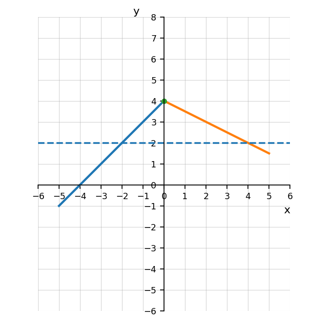
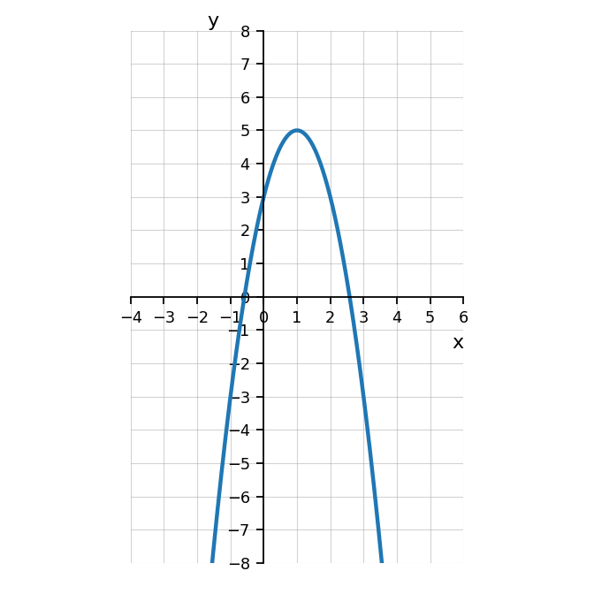

Let \(C(n)=2n^2+n\). Evaluate \(C(3)\) and \(C(-1)\).
The graph of \(r\) is shown.
Evaluate \(r(-2)\).
Evaluate \(r(4)\).
Solve \(r(x)=2\) using the graph.

Two students solve \(f(x)=0\) for \(f(x)=x^2-7x+10\).
Student A: \((x-5)(x-2)=0\), so \(x=5\) or \(x=2\).
Student B: \(x^2=7x-10\), so \(x=7\) or \(x=-10\).
Which student is correct? Explain the error in the other solution.
Choose a linear function and a factorable quadratic function that both have \(f(2)=6\). Compare how solving \(f(x)=6\) is different for the two functions.
Fill in the blanks.
For \(y=2(x-7)^2-3\), the graph is shifted ______ units right, ______ units down, stretched by a factor of ______, and opens ______.
The graph of a quadratic function is shown.
Identify the vertex.
State whether the graph opens up or down.
Describe the vertical stretch or compression compared to \(y=x^2\).
Write a possible equation in vertex form.

Describe the transformation from \(y=x^2\) to \(y=-(x+1)^2+4\). Use the words shift, reflect, and vertex in your answer.
A quadratic function has vertex \((2,-5)\), opens upward, and has no vertical stretch or compression. Write its equation in vertex form.
A quadratic function has vertex \((-3,5)\) and passes through the point \((-1,-7)\).
Determine \(a\).
Write the equation in vertex form.
State whether the vertex is a maximum or minimum.
A quadratic function has vertex \((1,-3)\) and \(a=-4\).
Write the equation.
Find \(f(0)\).
Find \(f(2)\).
Explain why the answers to parts b and c are related.
A graph has a minimum at \((-2,5)\) and passes through \((0,17)\).
Write the equation in vertex form.
Explain why the vertex must be a minimum.
Use symmetry to identify another point on the graph.
Two students are writing an equation for the same parabola. The graph has vertex \((4,-3)\) and passes through \((6,5)\).
Student A writes \(y=2(x-4)^2-3\).
Student B writes \(y=-2(x+4)^2-3\).
Determine which student is correct.
Explain each error or correct step.
Use substitution to verify the correct equation.
Use symmetry to find another point on the graph.
Explain how the vertex form prevents common graphing mistakes.
State whether each expression is equivalent to \(x^6\).
\(x^2\cdot x^4\)
\((x^2)^3\)
\(x^{12}\div x^2\)
\(x^8\div x^2\)
\(x^3+x^3\)
A student rewrites
\[\dfrac{x^5}{x^9}\]
as
\[x^4.\]
Is the student correct? Explain and simplify correctly.
Which expressions are equivalent to:
\[x^{-6}\]
\(\dfrac{1}{x^6}\)
\(-x^6\)
\(\dfrac{x^2}{x^8}\)
\((x^{-2})^3\)
\(\dfrac{x^{-3}}{x^3}\)
Explain your choices.
A teacher gives the class this challenge:
\[\left(\dfrac{3x^{-2}y^4}{6x^3y^{-1}}\right)^2\cdot \dfrac{4x^5}{y^3}\]
Simplify the expression completely.
Write the answer with positive exponents.
Explain why the order of exponent rules matters.
Identify two possible mistakes students might make and how to avoid them.